Bezpečnost, pojmy a platná legislativa
Základní pojmy
Za práci pod napětí se považuje práce na zařízení, kdy pracovník některou části těla, nářadím nebo předměty zasahuje do ochranného prostoru nebo je v kontaktu s živou částí.
Za prevenci rizik se rozumí všechna opatření vyplývající z právních a ostatních předpisů k zajištění bezpečnosti a ochrany zdraví při práci a z opatření zaměstnavatele, které mají za cíl předcházet rizikům, odstraňovat nebo minimalizovat působení neodstranitelných rizik.
Osoba poučená (§4)
Osoba poučená nesmí pracovat na částech nízkého napětí pod napětí (vyjma měření měřicími přístroji a jednoduchých předem schválených postupů)
Osoba znalá (§5)
Osoba znalá může pracovat na zařízení nízkého napětí pod napětím podle pracovních postupů, ale v prostorách mokrých, venkovních a vlhkých pouze pod dozorem
Bezpečnost práce
Povinnost sepsat záznam o úrazu má zaměstnavatel.
Zaměstnavatel sepisuje záznam o úrazu nejpozději do 5 pracovních dnů po oznámení pracovního úrazu.
Při práci pod dohledem je nutné na dodržování bezpečnostních předpisů dohlédnout před započetím práce a v průběhu prací podle potřeby občas.
Za prostory nebezpečné lze podle ČSN 33 2000 – 3 považovat prostory, kde vniká působením vnějších vlivů přechodné nebo stále nebezpečí elektrického úrazu.
Elektrické zařízení
Každé elektrické zařízení musí mít určenou osobu odpovědnou za elektrické zařízení. Pro každou práci na elektrickém zařízení musí být určen vedoucí práce.
Při dělení elektrických zařízení podle napěťových hladin je hranice mezi střídavým napětím nízkým (kategorie II) a vysokým (kategorie A) hranice určena: 600 V fázové a 1 kV sdružené.
Barevné značení – vodiče, sdělovače a ovladače
Barvy vodičů v elektrické instalaci v sítích nízkého napětí
Staré instalace – PE zelený
Řídící okruhy pracovních strojů pro stejnosměrné napájení – tmavě modrá
Řídící okruhy pracovních strojů pro střídavé napájení - červená
Barvy izolovaných vodičů
V síti NN typu TN-S – fáze černý, hnědý nebo šedivý; ochranný vodič PE zelenožlutý, střední nulový vodič N světle modrý
V síti typu TN-C – fáze černý nebo hnědý, ochranný a pracovní vodič PEN zelenožlutý s modrými návleky nebo světlemodrý se zelenožlutými návleky
Oranžově se značí vodiče, které nejsou vypínány hlavním vypínačem, tj. jsou živé i po vypnutí hlavního jističe
Zelenožluté vodiče se nesmí přeznačovat za účelem jiné funkce! Černý izolovaný vodič slouží pouze jako fázový vodič!
Barvy natřených holých vodičů
V sítích NN typu TN-S – fáze oranžová s černými pruhy, ochranný vodič PE zelenožlutý
V sítích TN-C – fáze oranžová s černými pruhy, ochranný a pracovní vodič PEN zelenožlutý
Stejnosměrné soustavy – kladný pól tmavě červeně, záporný pól tmavě modře, vodič PEN zelenožlutě
Ovladače
Vypínací ovladač – přednostně černý, možný i šedý, bílý a červený
Zapínací ovladač – přednostně bílý, možný i černý a zelený
Nouzové vypnutí – červená na žlutém pozadí
Seřízení, nastavení, zvláštní význam – modré tlačítko
Mimořádný stav (ruční najetí přerušeného automatického cyklu) – žluté tlačítko
Signálky
Mimořádný stav (přetížení, výpadek) – žlutá
Normální stav – zelená
Nebezpečí, nouzové zastavení (porucha důležitého zařízení) – červená
Zvláštní význam (podmínky vyžadující zásah) - modrá
Základní principy ochrany před úrazem elektrickým proudem
Třídy ochran elektrických zařízení
I. třída (pouze základní izolace), spotřebiče je nutno zapojit tří vodičově
II. třída (základní a ochranná izolace), spotřebič, který má značku 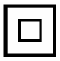, může být zapojen dvoužilově
Označení vodičů
značka 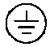 označuje ochranný vodič, který musí být k zařízení připojen
značka 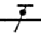 označuje vodič PEN
značka 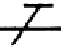 označuje ochranný vodič PE
značka 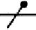 označuje nulový nebo střední vodič
je-li na viditelném místě kovového povrchu nebo vnitřku krytu značka 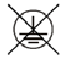, pak není nutné připojit ochranný vodič
Druhy sítí
První písmenko – T (bezprostřední spojení jednoho bodu sítě se zemí) a I (oddělení všech živých částí od země nebo spojení přes velkou impedanci)
Druhé písmenko – T (nepřímé spojení neživých částí se zemí) a N (přímé spojení neživých částí s uzemněným uzlem sítě)
Další písmenka – S (funkce ochranného vodiče je zajišťována vodičem odděleným od středního vodiče) nebo C (funkce středního a ochranného vodiče je spojena v PEN vodič)
Mez bezpečného napětí v prostorách normálních a nebezpečných je
pro neživé části (kryty) a izolované části 50 V stejnosměrného a 120 V střídavého napětí
pro přístupné živé části (holé vodiče) 60 V stejnosměrného a 25 V střídavého napětí
Sítě TN
Jako síť TN se obecně označuje síť, která má přímo uzemněný jeden bod sítě – nulový nebo krajní vodič, neživé části jsou k tomuto bodu spojeny prostřednictvím ochranných vodičů.
Automatické oddělení zdroje v sítích TN lze realizovat pojistkami, jističi a proudovým chráničem. Porucha v síti TN má za následek nadproud ve fázovém vodiči ekvivalentní zkratu.
Při použití ochrany samočinným odpojením zdroje pro spotřebiče třídy ochrany I. je v síti TN se jmenovitým fázovým napětím 230 V pro koncové obvody do 32 A předepsán čas 0,4 s.
TN-C
V síti TN-C je jeden bod sítě bezprostředně spojen se zemí. V celé síti je funkce ochranného a středního vodiče spojena ve vodič PEN. Dochází k přímému spojení neživých částí s uzemněným uzlem sítě.
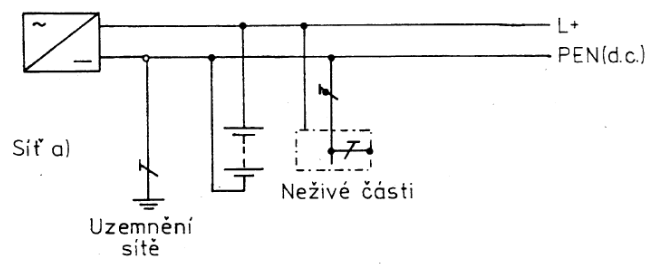
TN-S
V síti TN-S je jeden bod sítě bezprostředně spojen se zemí. V celé síti je funkce ochranného a středního oddělena na dva vodiče. Dochází k přímému spojení neživých částí s uzemněným uzlem sítě.
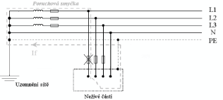 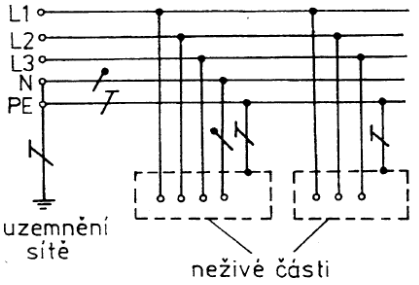
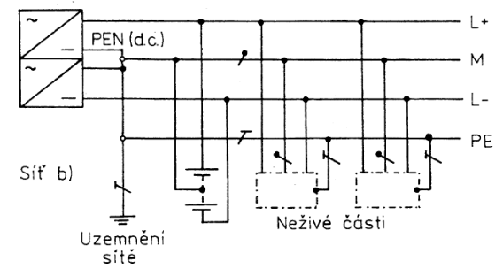
Ochranná vypínací smyčka je tvořena vynutím transformátoru – fázovým vodičem k místu poruchy a ochranným vodičem sítě PE.
TN-C-S
V síti TN-C-S je jeden bod sítě bezprostředně spojen se zemí. Funkce ochranného a středního vodiče je v části sítě spojena ve vodič PEN, který je posléze oddělen. Dochází k přímému spojení neživých částí s uzemněným uzlem sítě.
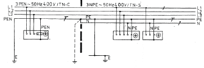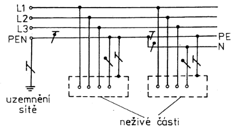
Síť TT
Síť, kdy je jeden bod přímo uzemněný.
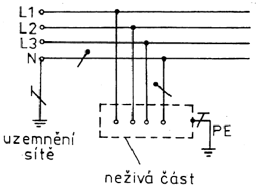
Automatické odpojení od zdroje v síti TT v případě poruchy se dnes obvykle realizuje proudovým chráničem, důvodem je malý poruchový proud.
Porucha v síti TT má za následek zpravidla nadproud ve fázovém vodiči podobající se přetížení.
Síť IT
Síť, kdy jsou všechny živé části izolované od země, nebo jeden bod je spojený se zemí přes velkou impedancí.
První porucha se v síti IT bez hlídače izolačního stavu obtížně zjišťuje, jeho použití z důvodu zajištění kontinuity je nutné. Automatické odpojení od zdroje v síti IT v případě první poruchy se obvykle nevyžaduje.
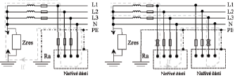
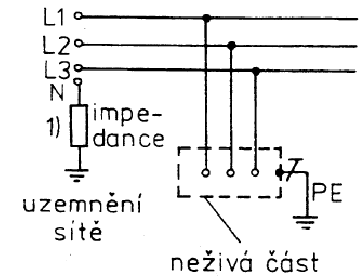
Ochrana bezpečným malým napětím
Napětí obvodů SELV nebo PELV v prostorách normálním nesmí přesáhnout hodnotu 50 v střídavě a 120 V stejnosměrně.
Označení SELV se používá pro obvody s bezpečným malým napětím (pro daný prostor), jejichž živé části nejsou spojeny v žádném případě se zemí.
Označení PELV se používá pro obvody s bezpečným malým napětím (pro daný prostor), jejichž živé části jsou spojeny se zemí v určitém bodě.
Ochrana proudovým chráničem
Proudový chránič z podstaty nejistí před zkratem a přetížením. Platí, že PEN nesmí procházet magnetickým obvodem proudového chrániče.
Proudový chránič s rozdílovým proudem 30 mA chrání uživatele před přímým dotykem živých částí a před nepřímým dotykem, tj. dotykem neživých částí.
Použití ochranného opatření s rozdílovým proudem 30 mA jako jediného opatření před úrazem elektrickým proudem není možné, je nutné uplatnit ochranné opatření „automatické odpojení od zdroje“ nebo „dvojitá nebo zesílená izolace“ nebo „elektrické oddělení“.
Ochrana elektrickým oddělením
Při použití ochrany elektrickým oddělením nesmí napětí elektricky odděleného obvodu přesáhnout 500 V.
Zapojení prodlužovacích přívodů
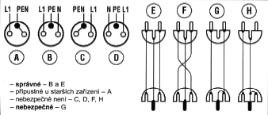
Zapojení v síti TN-S
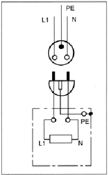
Zapojení po roce 1999:
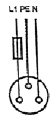 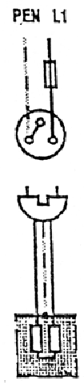
Zapojení spotřebiče I. třídy v síti TN-C
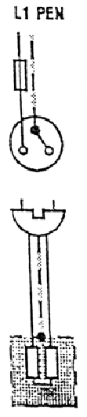 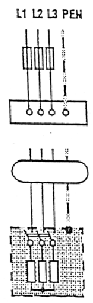 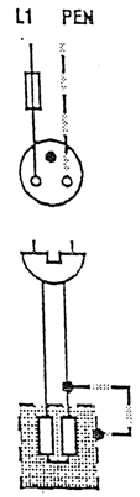
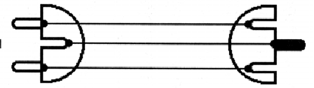
Zapojení ve starší instalaci:
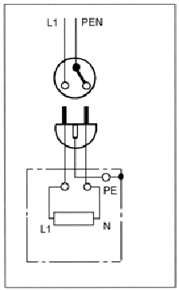
Správné zapojení
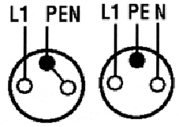
Jističe
Vedení se jistí proti přetížení a zkratu na začátku vedení nebo na začátek odbočky při snížení průřezu vedení.
Platí, že jistič je možno vyměnit za jistič s vyšším vybavovacím proudem pouze za předpokladu, že dojde k posouzení funkčnosti ochrany před nebezpečným dotykem. Při rozšíření stávajícího okruhu nevyžadující změnu jištění se vypracování revizní zprávy obvykle nepožaduje, je však nutné provést záznam o kontrole s podpisem pověřeného pracovníka.
Jmenovitou vypínací schopnosti vypínacího prvku (pojistka, jistič) rozumím maximální poruchový proud, který je schopen prvek bezpečně vypnout.
Typy jističů
Typ B – poměr zkratové spouště k jmenovitému proudu cca 3-5
Typ C – poměr zkratové spouště k jmenovitému proudu cca 6-9
Typ D
Značení pojistek
Pojistkové spodky závitových spojek je nutno zapojit středním kontaktem na stranu zdroje.
gG – určeno pro všeobecné použití – jištění vedení, kabelů, zařízení před přetížením a zkratem
aM – určeno pro jištění motorů a spotřebičů s velkým záběrovým proudem, jistí v omezeném rozsahu nadproudů, jen pro zkraty
První pomoc při úrazech elektrickým proudem, hašení elektrického zařízení
Postup při vzniku úrazu elektrickým proudem
Vyprostit postiženého z dosahu elektrického proudu, zajistit životní funkce – umělé dýchání, nepřímá srdečná masáž, přivolání lékařské pomoci, uvědomění vedoucího, zápis do knihy úrazů.
Je-li postižený po úraze elektrickým proudem při vědomí, pak jej stačí udržovat pod odhledem (ticho – teplo – tekutiny).
Pokud by postižení po úrazu elektrickým proudem v bezvědomí dýchal a objeví se u něj cyanóza (fialoví), pak je třeba k umělému dýchání přidat nepřímou srdeční masáž.
Hašení
Elektrické zařízení pod napětím lze hasit sněhovým a práškovým hasicím přístrojem (ne vodním).
Bezpečně vypnuté elektrické zařízení je možné hasit pěnovým, práškovým, sněhovým nebo vodním hasicím přístrojem.